Wie löse ich Matheaufgaben?
Steckbriefaufgaben
Sie sehen ein gelbes Eingabefeld und die
Schalter: Prüfen und Lösung.
Tragen Sie Ihr Ergebnis ein, prüfen Sie es
oder starten Sie eine Lösung.
Aufgabe 117
Der dargestellte Brückenbogen kann durch eine Parabel der Form f(x) = ax2 beschrieben werden. Wie groß ist a?
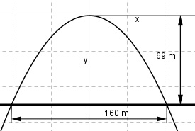
Aufgabe 118
Rohrbrüche bei Leitungswasser sind über die Hausratversicherung abgesichert. Häufig müssen danach Trockner für nass gewordenes Mauerwerk eingesetzt werden. In einer Tabelle hat der Versicherer übliche Trocknungszeiten für unterschiedliche Mauerdicken aufgezeichnet.
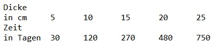
(siehe Skizze).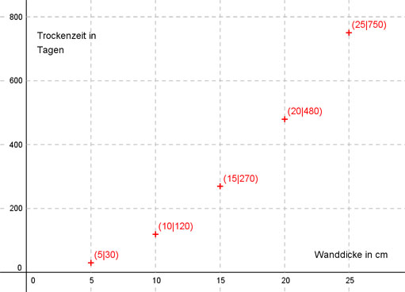
Versicherungsmathematiker haben heraus- gefunden, dass die Punkte vermutlich auf dem Graphen einer Funktion der Form f(x) = ax2 liegen. a) Wie lautet seine Funktionsgleichung? b) Nach wieviel Tagen ist eine 18 cm dicke Mauer trocken? c) Wie dick ist eine Mauer, wenn sie nach 400 Tagen trocken ist? Sie ist cm dick.Aufgabe 119
Eine Kugel verlässt die Hand eines Kugelstoßers in einer Höhe von 2 m, hat nach 3 m eine Höhe von 4 m und schlägt nach 18 m auf. Die Flugbahn verläuft entlang des Graphen einer Funktion der Form f(x) = ax2 + bx + c.
a) Wie lautet die Funktionsgleichung? b) Welche maximale Höhe erreicht die Kugel? c) In welcher Entfernung ist die Kugel 5 m hoch?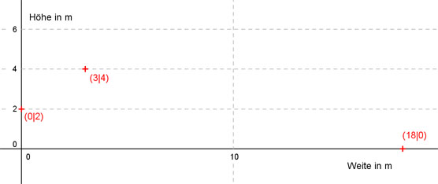
Aufgabe 120
Ein Brückenbogen über einem Fluss ist parabel- förmig und symmetrisch. Sein höchster Punkt liegt 4,05 m über der Wasser- oberfläche, und er überspannt 12 m von Ufer zu Ufer. Berechnen Sie die Bogenhöhe, um festzustellen, ob sie für die Durchfahrt eines 4,96 m breiten und 2,50 m hohen Schiffes ausreicht.
Bogenhöhe = m.Aufgabe 121
Der Lastkahn wird mit Kies befüllt. Der Kies verlässt das Förderband am höchsten Punkt des Graphen einer Parabel der Form y = ax2. In welcher Entfernung von der Kaimauer trifft der Kies in den Kahn, wenn der 4 m tiefer liegt?
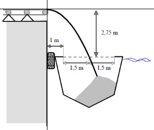
Aufgabe 122
Die Kugel eines Kugelstoßers beschreibt eine Bahn wie dargestellt. Welche maximale Höhe erreicht die Kugel?
Es sind m.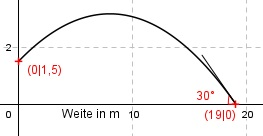
Aufgabe 123
Eine Stromleitung hängt zwischen Masten parabelförmig durch, weil sonst die mechanische Spannung in den Leitungen zu groß wird. Wie weit von einem Mast entfernt, kann ein 28 m Hochkran durchfahren, wenn die Masten 200 m voneinander entfernt, 30 m hoch sind und der tiefste Punkt der Leitung in 22 m Höhe liegt?
Aufgabe 124
Stolleneingänge in Parabelform haben sich für Weinkeller, die in Berghänge eingebaut werden, als Stützkonstruktion bewährt. Wie hoch muss der dargestellte ausgemauerte Eingang sein, damit eine Tür mit den angegebenen Maßen eingebaut werden kann?
Er muss m hoch sein.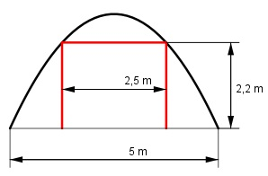
Aufgabe 125
Das Tragseil (rot) einer Seilbahn hängt zwischen den Masten (grün) in Parabelform durch. Es hat im Punkt A die Steigung 0,5. Wie groß ist die maximale Durchhängung d?
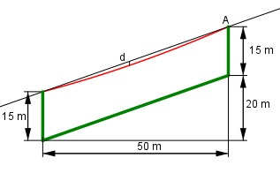
Aufgabe 126
Mit Parabelflügen kann man Schwerelosigkeit simulieren. Dazu wird ein Flugzeug unter einem Winkel von 45° auf eine Höhe von 9000 m gebracht, dann der Schub so reduziert, dass das Flugzeug erst noch steigt, aber nach 5000 m wieder auf 9000 m gesunken ist. Danach erhöht der Pilot den Schub, damit es nicht abstürzt. Auf welche maximale Höhe steigt es unter diesen Bedingungen?
Auf m.Aufgabe 127
Die beiden Straßenstücke sollen so durch eine ganzrationale Funktion miteinander verbunden werden, dass die Verlängerung tangential zur vorgebenen Richtung verläuft und die zweite Ableitung an den Verbindungspunkten gleich groß ist. Wie lautet die Funktionsgleichung?
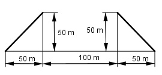
Aufgabe 128
Eine Hauseinfahrt hat zur Straße hin einen
Höhenunterschied von 1 m. Sie soll mithilfe einer
ganzrationalen Funktion so gestaltet werden, dass
sie waagerecht 5 m von der Star0e entfernt
beginnt und waagerecht in die Straße einmündet.
1 m von der Straße entfernt liegt auf Hausebene
ein
70 cm hoher Felsbrocken. In welchem Abstamd
überstreicht ihn die geplante Einfahrt?
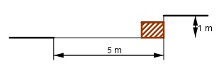
In einem von cm.Aufgabe 129
Die Veränderung der Oberflächentemperatur eines Teiches während eines Tages kann nach lang- jähriger Beobachtung durch eine ganzrationale Funktion 3. Grades beschrieben werden. Messungen ergaben: Um 0.00 Uhr waren es 19°, um 6.00 war sie am niedrigsten mit 17,8° und um 17.00 war sie am höchsten. Zu welchem Zeitpunkt ist sie am stärksten gestiegen?
Aufgabe 130
Eine Bäckerei verpackt Kuchen in Schachteln aus Karton. Die Schachteln stellt der Lieferant auf Wunsch der Bäckerei wie dargestellt her. Wie lang dürfen die ausgeschnittenen Quadratesein, wenn das Volumen der Schachtel möglichst groß sein soll?
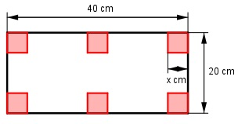
Maximal cm.Aufgabe 131
In der Massentierhaltung ist eine wichtige Größe, wann das Tier Schlachtgewicht erreicht. Messungen haben ergeben:
Anzahl Monate 0 2 4 5 6 Gewicht G in kg 1,5 30 67 80 88Man hat festgestellt, dass die Gewichtszunahme durch eine ganzrationale Funktion 4. Grades beschrieben werden kann. a) Welches Gewicht hat ein Tier nach einem Monat? b) Nach wieviel Tagen ist die Gewichtszunahme maximal?
Aufgabe 132
Für eine quadratische Kostenfunktion gelten folgende betriebliche Bedingungen: Die Fixkosten betragen 5 GE (Geldeinheiten), die Grenzkosten bei 15 ME (Mengeneinheiten) betragen 0,3 GE, und bei 10 ME entstehen Gesamtkosten von 6 GE. Für die Erlösfunktion des Monopolisten gilt: Bei 10 ME ist der Erlös 20 GE, und bei 15 ME ist er maximal. Wie hoch ist der maximale Gewinn?
Gmax = GEAufgabe 133
Für eine ganzrationale Kostenfunktion 3. Grades gelten folgende betriebliche Bedingungen: Ein Bauteil kostet in der Herstellung 90 GE, die variablen Kosten für 2 Bauteile betragen 56 GE, die Grenzkosten betragen 27 GE pro Bauteil und das Minimum der Grenzkosten liegt bei 8/3 Bauteilen. Jedes Bauteil wird für 90 GE verkauft.
a) Wie hoch ist dasGewinnmaximum? b) Bei wieviel ME liegt das Betriebsminimum?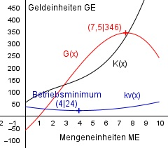
Aufgabe 134
Für eine ganzrationale Kostenfunktion 3. Grades gelten folgende betriebliche Bedingungen: Die Fixkosten betragen 16 Geldeinheiten (GE),die Produktion von 4 Mengeneinheiten (ME) kostet 48 GE, die Grenzkosten für 2 ME betragen 4 GE, und die Stückkosten für 3 ME sind 37/3 GE. Bei wieviel ME liegt das Betriebsoptimum?
Bei ME.Aufgabe 135
Die Produktion eines Lebensmittels findet unter folgenden betrieblichen Bedingungen statt:
Menge in t 0 6 20 30 Kosten in € 250 500 700 900Wieviel kosten 25 t, wenn die Kostenfunktion 3. Grades und ganzrational ist?
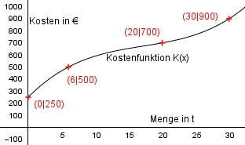
Aufgabe 136
Die fixen Kosten bei der Herstellung eines Bauteils betragen 2000 €, die variablen Kosten gibt der Hersteller mit 0,8x2 + 60x an. Der Verkaufspreis beträgt 180 €.
a) Bei welcher Menge liegt die Gewinnschwelle? b) Wie groß ist der maximale Gewinn? c) Ab welchem Verkaufspreis macht der Hersteller keinen Gewinn mehr? Ab GE.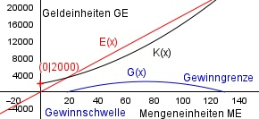
Aufgabe 137
Eine Firma bestimmt ihre Gesamtkosten mit einer ertragsgesetzlichen Kostenfunktion. Ihre jährlichen Fixkosten betragen 30 000 €, bei einer Menge von 20 ME fallen 60 000 € Kosten an, bei einer Menge von 60 ME entstehen durchschnittliche Kosten von 1200 €, dort ist auch das Betriebsminimum. Welche Kostenentstehen bei 40 ME?
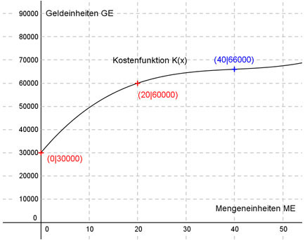
Aufgabe 138
Ein Hersteller berechnet seine Gesamtkosten mit einer ganzrationalen Funktion 3. Grades. Dabei setzt er 720 € Fixkosten an, rechnet mit durchschnittlichen variablen Kosten von 50 € bei einer produzierten Menge von 100 ME, mit Grenzkosten von 48,03 € bei 1 ME und mit gesamten Durchschnittskosten von 70 € bei 20 ME. Bei welcher ME liegt sein Betriebsminimum?
Bei ME.Aufgabe 139
Einen Monopolisten kosten 20 produzierte Bauteile 6000 €, und 60 Stück kosten 18000 €. Er erzielt bei diesen Mengen weder Gewinn noch Verlust. Er ermittelt seine Kosten mit einer quadratischen Funktion und rechnet dabei mit 5400 € Fixkosten. Als Erlösfunktion nutzt er eine lineare Funktion. Wie hoch ist sein maximaler Gewinn?
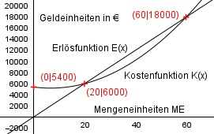
Aufgabe 140
In einer landwirtschaftlichen Versuchsstation hat man den Ertrag eines Erdbeerfeldes und die eingesetzte Düngermenge in t gemessen. Zur graphischen Darstellung dieses Sachverhaltes wird eine ganzrationale Funktion 4. Grades mit folgenden Bedingungen eingesetzt. Ungedüngt liefert das Feld minimal4 t Erdbeeren, der Ertrag verdreifacht sich und wird maximal, wenn eine Tonne Dünger eingesetzt wird, beim Einsatz von 2 t sinkt der Ertrag wegen Überdüngung auf 0 t. (Der Graph liefert nur bis zu dieser Düngermenge brauchbare Ergebnisse). Welchen Ertrag erzielt man beim Einsatz von 1,5 t Dünger?
Es sind tAufgabe 141
Das Wachstum einer Pflanze soll durch eine ganzrationale Funktion 3. Grades modelliert werden. Folgende Messwerte liegen vor:
Monate 0 1 5 Höhe in cm 20 40 120Nach 5 Monaten hat sie ihre maximale Höhe erreicht.Zu welchem Zeitpunkt ist der Höhenzuwachs am größten?
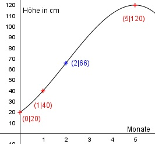
Aufgabe 142
Ein Chemiker hat ein Mittel entwickelt und will
dessen Wirkung mit einer ganzrationalen Funktion
3. Grades beschreiben. Dazu hat er die Reaktions-
stärke R auf das Mittel in Abhängigkeit von der
Dosis in kg gemessen.
(R = 0 bedeutet keine
Reaktion, je größer R, desto größer die Reaktion).
Dosis in kg 0 1 2 4 Reaktionsstärke R 0 1,25 4 8Welche Dosis ist erforderlich, wenn R = 6,25 auftreten soll? Sie muss kg oder 5kg betragen.
Ergänzen Sie die Wertetabellen für x zwischen 0 und 5π:
Aufgabe 143
Vor der Vertragsunterzeichnung wird die Fitness eines Fussballspielers überprüft, indem man seine Laktatkonzentration im Blut abhängig von der Laufgeschwindigkeit auf einem Laufband misst. Zu Beginn der Untersuchung beträgt sie -25. Bei 10 km/h beträgt sie 3, bei 14 km/h 3 und bei 15 km/h 4,25. Zur Veranschaulichung soll die Konzentration durch eine Funktion 3. Grades dargestellt werden. Bei welcher Geschwindigkeit ist die Laktat- konzentration am geringsten?
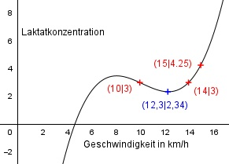
Aufgabe 144
In einer forstwirtschaftlichen Untersuchung ermittelt man wochenweise den Befall von Schadstoffinsekten und stellt ihn mit Hilfe einer ganzrationalen Funktion 3. Grades dar. Die Messung beginnt nach 0,4 Wochen noch ohne einen Befall. Nach 2 Wochen beträgt er 48, nach 3,4 Wochen 81,6 und ist dann maximal. Nach wieviel Wochen ist er wieder verschwunden?
Nach Wochen.Aufgabe 145
Hochspannungsleitungen hängen zwischen den gleich hohen Masten durch. Höhenmessungen hatten folgende Ergebnisse: 20 m von einem Masten entfernt hängt die Leitung in 42,8 m Höhe, im Abstand von 80 m sind es 35 m und in einem von 120 m sind es 31,8 m. Wie weit ist der tiefste Punkt entfernt?
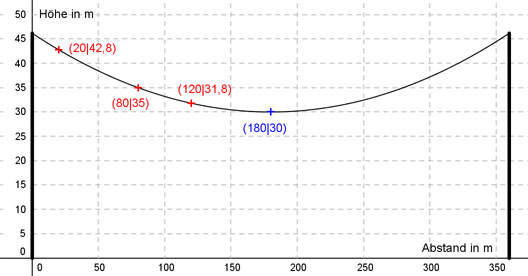
Aufgabe 146
Ein Arzneimittelhersteller will durch eine ganzrationale Funktion 3. Grades beschreiben, wie sich die Konzentrationeines Medikaments nach der Einnahme abhängig von der Zeit im Körper verändert, um sie dann für beliebige Zeiten ablesen zu können. Zu Beginn liegt noch keine Konzentration vor, nach 2 Stunden sind es 36 Einheiten und nach 3 Stunden 19,5. Er weiß, dass die höchste Konzentration nach 2 Stunden erreicht ist. Wann beträgt sie 24,5 Einheiten?
Nach oder 2,84 Stunden.Aufgabe 147
Ein Einproduktunternehmen geht von einer ertragsgesetzlichenKostenfunktion aus. Die Fixkosten betragen 40 GE, bei der Herstellung von 1 ME entstehen Kosten von 62 GE, bei 3 ME sind es 100 GE, und bei 5 ME entstehen 170 GE. Wie hoch sind die variablen Stückkosten beim Betriebsminimum?
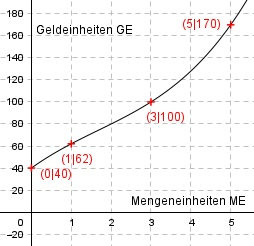
Aufgabe 148
Bei welcher Mengeneinheit liegt das Betrieb-
soptimum, wenn Fixkosten von 9 GE vorliegen, bei
2 ME Kosten von 69 GE, bei 6 ME welche von
93 GE
und bei 10 ME welche von 309 GE entstehen und der
Betrieb mit einer ertragsgesetzlichen
Kostenfunktion arbeitet?
Ergänzen Sie die Wertetabellen für x zwischen 0 und 2π:
Aufgabe 149
Ein Produzent hat Grenzkosten von 38 GE bei 2 ME,
Stückkosten von
42 GE bei 4 ME, Gesamtkosten von
504 GE bei 12 ME, und Betriebsoptimum und
Betriebsminimum fallen zusammen. Er stellt diesen
Zusammenhang durch eine ganzrationale Kosten-
funktion dar. Bei welcher ME treten Betriebs-
optimum und Betriebsminimum auf?
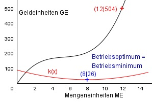
zurück